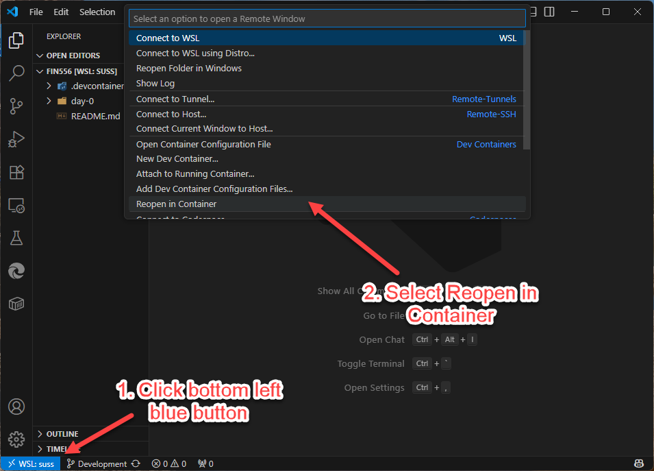

Get materials
Pull the latest course repository.
Update your materials. Open your workspace.
Check your tools before the lesson begins.
Pull the latest course repository.
Start in the FIN556 directory.
Use the shared course environment.
Confirm that your terminal is ready.
In your host terminal: Ubuntu on Windows/WSL, or Terminal on macOS.
$ cd ~/courses/FIN556 $ git pull
Run these commands at the start of each class.
Stay in the course directory.
$ code .The dot means “open the current folder.”
Already installed? Skip this step.
Windows: Ctrl + Shift + X
macOS: Cmd + Shift + X
Before you connect:
Command Palette:
Windows: Ctrl + Shift + P
macOS: Cmd + Shift + P
Dev Containers:
Reopen in Container

The configured image is downloaded if it is not available locally.
The container starts with its pre-installed development tools.
VS Code installs the configured extensions.
The first run may take a few minutes. Look for your project files and an active container terminal.
In VS Code, choose Terminal → New Terminal.
$ node --version v22.15.0 $ npm --version 10.9.2 $ git --version git version 2.34.1
$ npm ls -g /usr/local/share/nvm/versions/node/v22.15.0/lib ├── corepack@0.32.0 ├── hardhat-shorthand@1.1.0 └── npm@10.9.2
Look for hardhat-shorthand in the list.
It provides the hh shortcut for npx hardhat, used in day-1 lessons. Output shown is an example.
For container file-permission issues, try rebuilding. If problems persist, search using the exact error message.
✓ Course materials updated
✓ FIN556 open in the dev container
✓ Tool versions checked
✓ hardhat-shorthand found
You’re ready to begin the lab.